Wi-Fi使用说明
中文|English
简介
本示例演示了如何在 Titan Board 上使用 RA8 系列 MCU 的 SDHI 模块（r_sdhi） 驱动 CYWL6208-GS WiFi 模块，从而实现基于 SDIO 接口的无线网络连接。 在该示例中，MCU 通过 SDIO 总线 与 CYWL6208-GS 模块（芯片 CYW43438）通信，结合 RT-Thread 的网络协议栈（lwIP）实现 TCP/IP 网络功能。
WiFi 简介
1. 概述
WiFi（Wireless Fidelity，无线保真） 是一种基于 IEEE 802.11 标准 的无线局域网（WLAN）通信技术。它通过无线电波在终端设备（如 MCU、手机、电脑、IoT 设备）与接入点（AP）之间传输数据，实现 短距离高速无线通信。
WiFi 目前是最常用的无线连接技术之一，广泛应用于家庭网络、办公网络、工业控制、智能家居和物联网设备。
2. 工作原理
通信方式
WiFi 使用 ISM 频段（2.4 GHz、5 GHz、6 GHz），通过 OFDM、DSSS、QAM 等调制方式实现数据传输。
WiFi 网络由 接入点（AP） 和 终端设备（Station, STA） 构成。
数据传输流程
终端 STA 通过 扫描（Scan） 找到可用 WiFi 网络
STA 发送 认证与关联请求
接入点 AP 完成 握手与密钥协商
STA 与 AP 建立安全通信通道后进行数据传输
3. WiFi 协议标准
WiFi 的不同版本对应 IEEE 802.11 标准：
标准 |
频段 |
最大速率 |
特点 |
|---|---|---|---|
802.11b |
2.4 GHz |
11 Mbps |
早期版本，抗干扰差 |
802.11g |
2.4 GHz |
54 Mbps |
向下兼容 b |
802.11n (WiFi 4) |
2.4/5 GHz |
600 Mbps |
MIMO 技术 |
802.11ac (WiFi 5) |
5 GHz |
3.5 Gbps |
MU-MIMO、80/160 MHz 信道 |
802.11ax (WiFi 6) |
2.4/5/6 GHz |
9.6 Gbps |
OFDMA，更低延迟，更高并发 |
802.11be (WiFi 7) |
2.4/5/6 GHz |
>30 Gbps |
多链路操作（MLO），超高吞吐量 |
4. WiFi 模式
STA 模式（Station）：设备作为终端接入 AP
AP 模式（Access Point）：设备作为热点提供网络
P2P 模式（Peer-to-Peer/Ad-Hoc）：设备间直接通信
混合模式：STA 与 AP 同时存在
5. WiFi 安全机制
WEP（已废弃，不安全）
WPA/WPA2：基于 TKIP、AES 加密，主流安全方式
WPA3：增强安全性，支持 SAE 握手，防止暴力破解
6. WiFi 特点
优点
高速传输（Gbps 级别）
广泛支持（手机、PC、MCU 等）
成本低，生态成熟
可同时接入多设备
缺点
功耗较高，不适合超低功耗应用
传输距离有限（一般 10~100 米）
在 2.4 GHz 下易受干扰（蓝牙、微波炉等）
RA8 系列 SDHI 模块概述
RA8 系列 MCU 内置的 SDHI（SD Host Interface） 模块是一个符合 SD/SDIO/eMMC 标准 的主机控制器，能够通过 1-bit 或 4-bit 数据线与存储设备（SD 卡、eMMC）或支持 SDIO 协议的外设（如 WiFi、蓝牙模块）进行通信。
在存储应用中，它可作为 SD/eMMC 控制器实现高速读写；在 外设扩展应用中，它可作为 SDIO 主机与 WiFi、蓝牙、GNSS 等模块建立数据通道。
在本示例中，SDHI 主要用于驱动 CYWL6208-GS WiFi 模块（基于 SDIO 接口），从而实现 MCU 的无线联网功能。
1. 总体特性
支持 SD 标准
SD v1.x / v2.x / SDHC / SDXC
支持 SPI 模式和 SD/MMC 模式
高速数据传输
最高可达 50 MHz SDCLK（具体取决于 MCU 时钟配置）
支持 1-bit/4-bit 数据总线
自动命令和数据传输
支持 DMA 传输模式，减少 CPU 占用
自动命令序列生成（CMD0~CMD63）
错误检测
CRC7 校验命令，CRC16 校验数据
超时检测，响应错误识别
中断支持
卡插拔检测中断
命令完成中断
数据传输完成中断
错误中断
2. SDHI 模块架构
RA8 SDHI 模块主要包含以下子模块：
命令控制单元（Command Control Unit）
负责发送命令（CMD0~CMD63）
处理命令响应（R1、R2、R3、R7 等）
支持命令超时检测和 CRC 校验
数据传输单元（Data Transfer Unit）
通过内部 FIFO 或 DMA 实现数据收发
支持块读/写，最大 512 字节块
支持单块/多块传输模式
时钟与总线控制
SDCLK 生成和分频
1-bit 或 4-bit 总线切换
可配置高/低电平保持时间
卡检测与电源控制
检测 SD 卡插入/拔出状态
可控制卡片电源开关（如支持）
中断与事件控制单元
命令完成中断
数据传输完成中断
错误中断
卡插拔中断
3. 工作流程（以 SDIO WiFi 为例）
硬件初始化
配置 SDHI 引脚：CMD、CLK、DAT0~3
使能时钟，复位 SDHI 控制器
总线初始化
设置时钟频率（初始低速 → 高速模式）
发送初始化命令（CMD0、CMD5、CMD3 等）
枚举设备，分配 RCA
功能配置
识别为 SDIO WiFi 设备
配置块大小、总线宽度、传输速率
打开中断机制
正常运行
WiFi 驱动通过 SDIO 寄存器访问与数据传输接口控制模块
MCU 通过 DMA + 中断 与 WiFi 芯片交换大数据包
上层协议栈（lwIP）完成 TCP/IP 通信
硬件说明
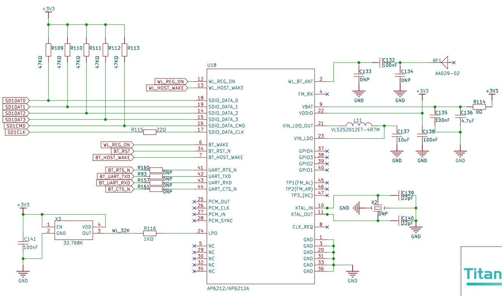
FSP 配置
首先需要配置 Flash，Flash 配置参考
Titan_component_flash_fs工程下的 README.md。接下来配置 SDHI1，新建 r_sdhi stack：
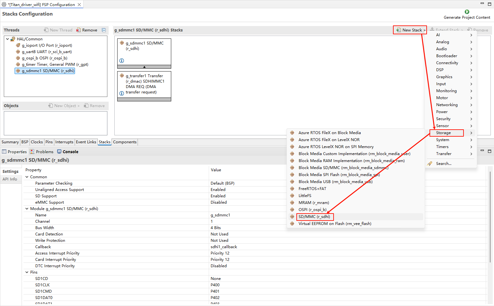
配置 SDHI1 stack：
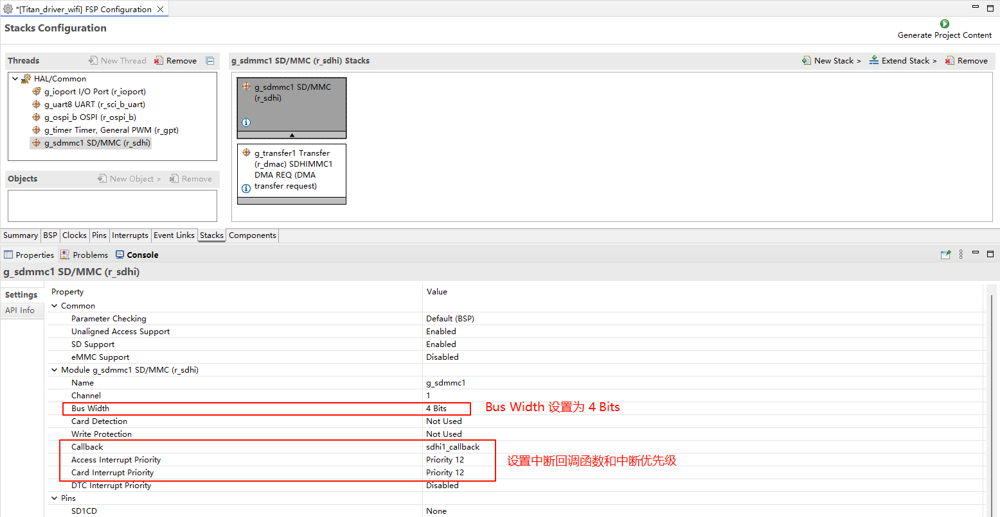
配置 SDHI1 引脚：
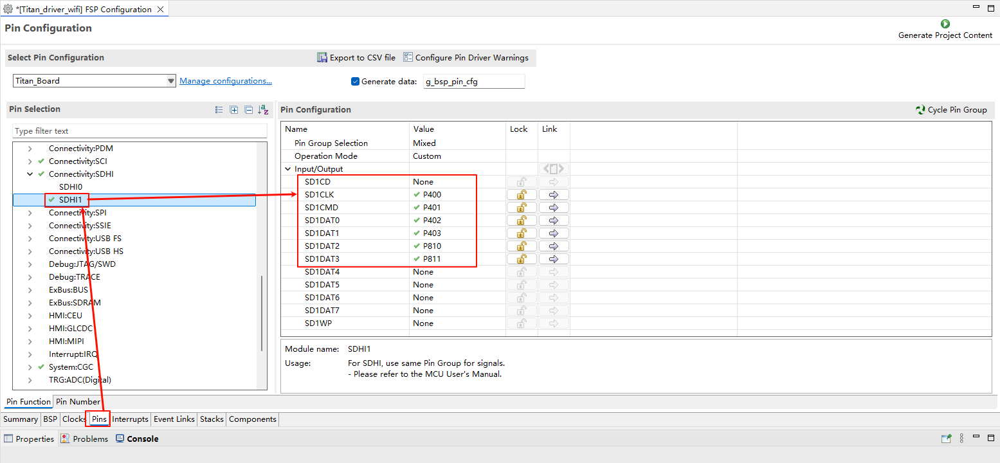
RT-Thread Settings 配置
使能 ospi Flash。
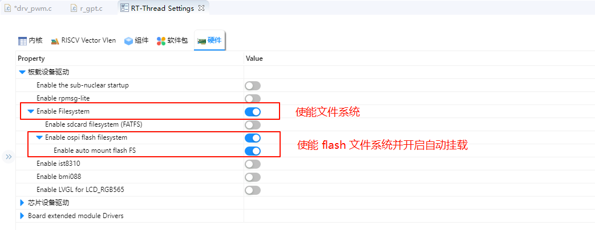
SDHI1 的 Bus Width 设置为 4。
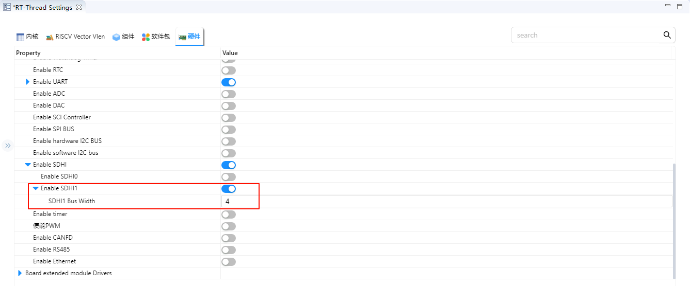
配置 WHD 软件包。
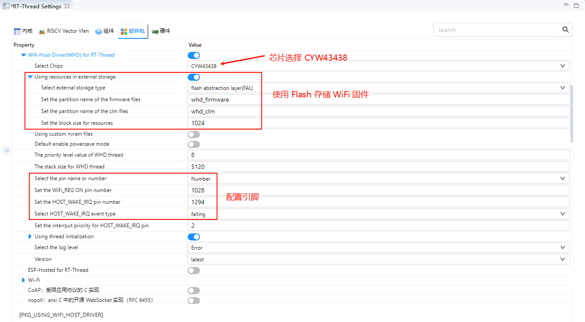
编译&下载
RT-Thread Studio：在 RT-Thread Studio 的包管理器中下载 Titan Board 资源包，然后创建新工程，执行编译。
编译完成后，将开发板的 USB-DBG 接口与 PC 机连接，然后将固件下载至开发板。
运行效果
按下复位按键重启开发板，如果终端输出固件读取错误的信息，那么需要使用 ymodem 向 Flash 中下载 WiFi 固件。使用 whd_res_download whd_firmware 命令下载 43438A1.bin 到 Flash 的 whd_firmware 分区中；使用 whd_res_download whd_clm 命令下载 43438A1.clm_blob 到 Flash 的 whd_clm 分区中。
WiFi 固件可以在工程根目录的 /firmware 文件夹中找到。
烧录 WiFi 固件:
使用带有 ymodem 功能的串口工具，如 Xshell。
输入 whd_res_download whd_firmware 命令后右键窗口，然后点击传输->YMODEM->用YMODEM发送。
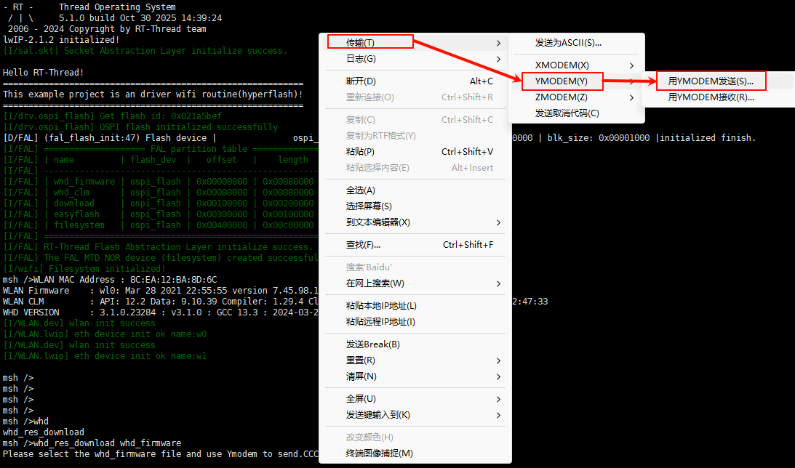
选择 43438A1.bin 文件，然后点击打开开始烧录 43438A1.bin。
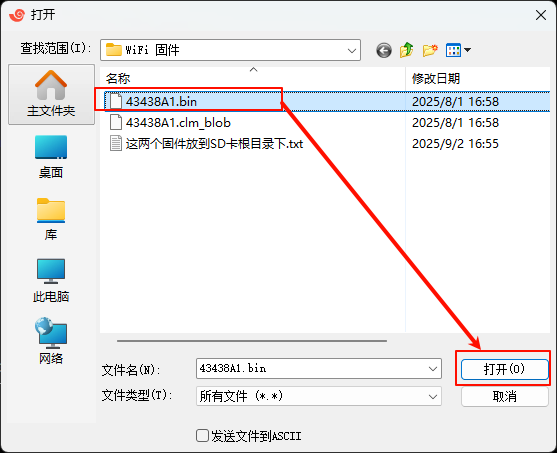
输入 whd_res_download whd_clm 命令后右键窗口，然后点击传输->YMODEM->用YMODEM发送。
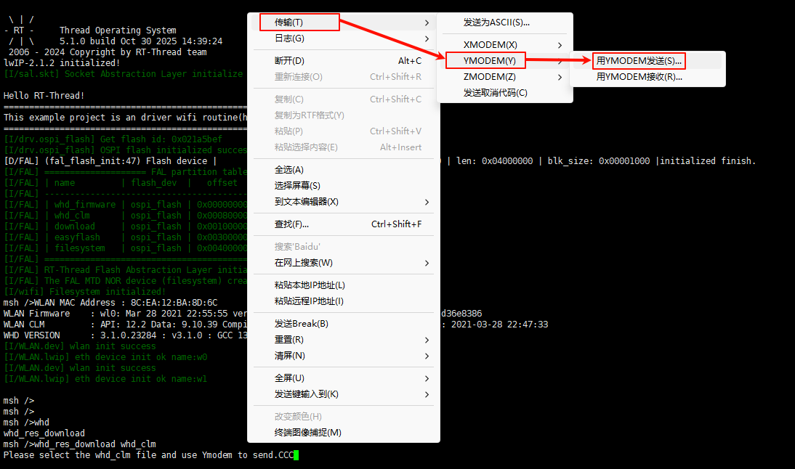
选择 43438A1.clm_blob 文件，然后点击打开开始烧录 43438A1.clm_blob。
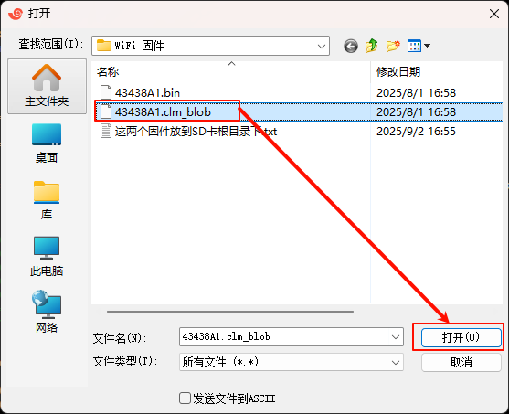
测试 WiFi:
下载 WiFi 固件后复位开发板，能看到 WiFi 固件正常加载，WiFi 模块初始化成功。接着输入 wifi join 自己家的2.4Gwifi名称 wifi密码 连接 WiFi，然后输入 ping baidu.com进行 ping 测试。
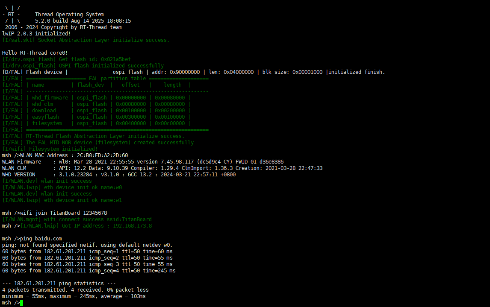